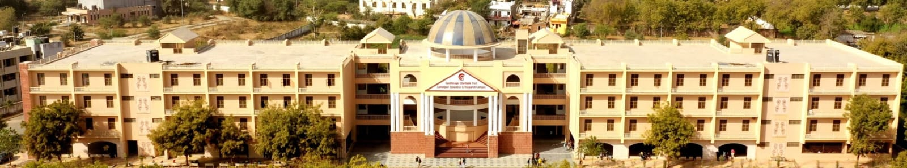
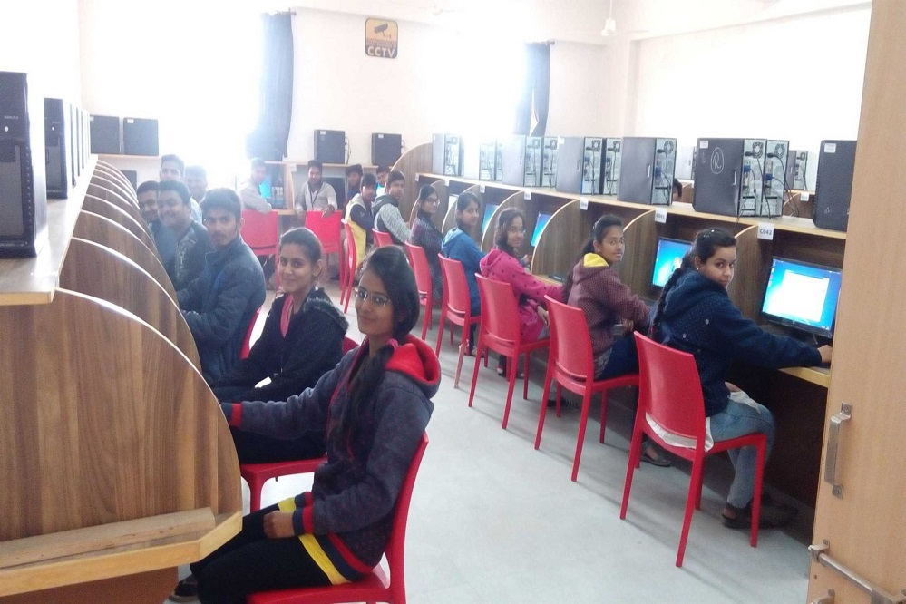
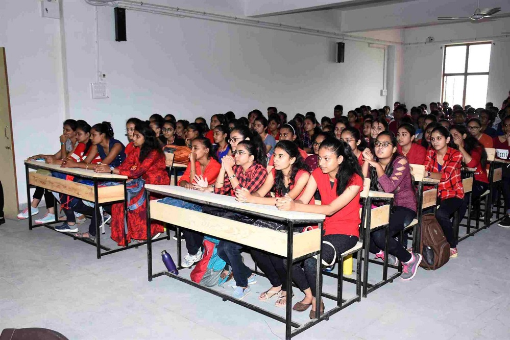
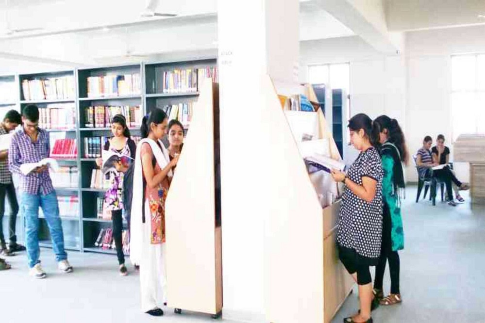
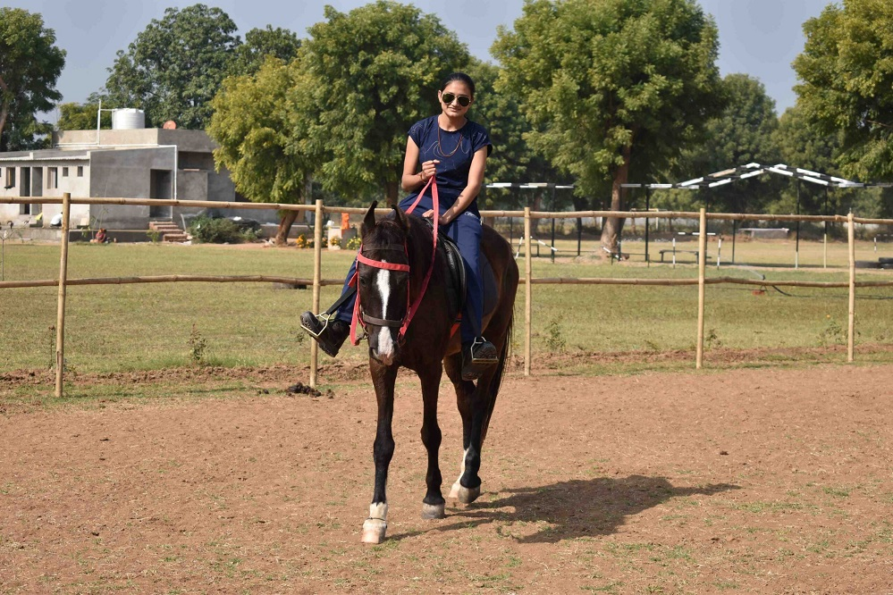
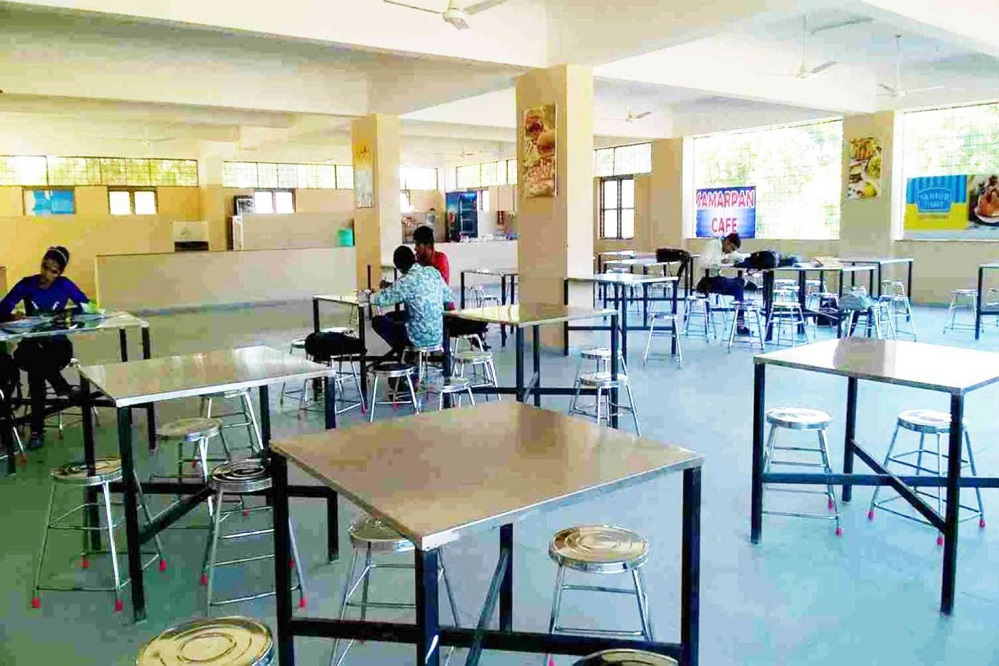
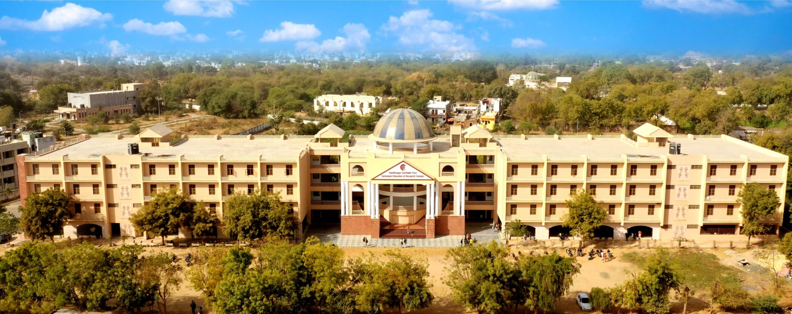

Samarpan Institute of Computer Science
Samarpan Education and Research Campus
Empowering Students Through Quality IT & Computer Applications Education
Discover our rich legacy of academic excellence, campus infrastructure, and commitment to shaping future IT leaders.
The Samarpan Computer Sciences Institute has crafted a comprehensive curriculum that encompasses fundamental concepts of databases, data structures, programming languages, and networking. In addition to theoretical understanding, the program emphasizes hands-on learning through experiential modules, including project work and product development.
With a dedicated faculty, robust infrastructure, and a well-equipped library, the BCA department aims to be one of the leading choices among top institutions in Gujarat. The combination of academic rigor and practical experience equips students not only with essential knowledge but also with the confidence and skills to thrive in a rapidly evolving technological landscape.
The campus is centrally located near Samarpan Circle, Sector-28 in Gandhinagar, offering a serene, green, and student-focused environment conducive to higher learning.

The goal of our program is to equip students with in-depth knowledge of computing systems while fostering an innovative mindset. We aim to shape them into responsible citizens imbued with human and ethical values, empowering them to address societal challenges on a global scale. By promoting an innovation-centric education and research environment, we seek to position our institution as a leading center of knowledge in computer applications.
To achieve academic and industrial excellence, our institution emphasizes the cultivation of critical thinking skills while actively engaging students in both software development and research within the realm of computer applications. By fostering an environment that values inquiry and innovation, we prepare students to tackle complex problems and adapt to the ever-evolving landscape of technology.
Explore our cultural events, academic activities, student experiences, and achievements.
A glimpse of student life, facilities, and memorable events at Samarpan Institute of Computer Science.





